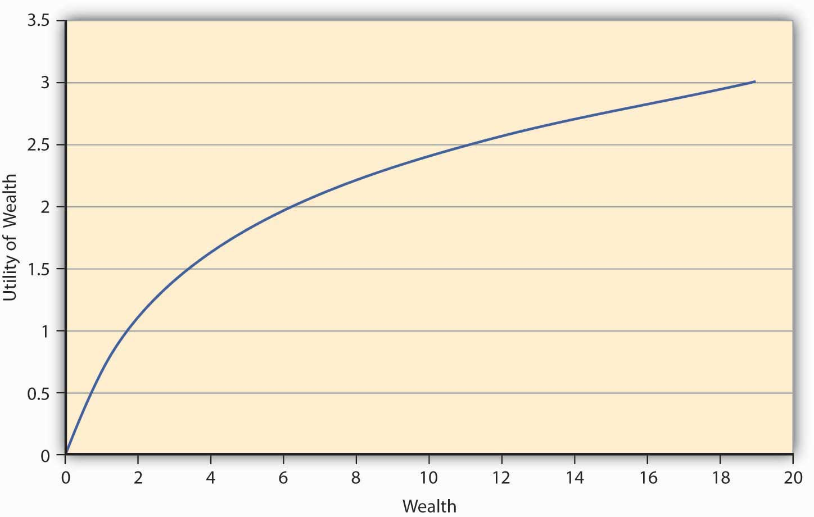
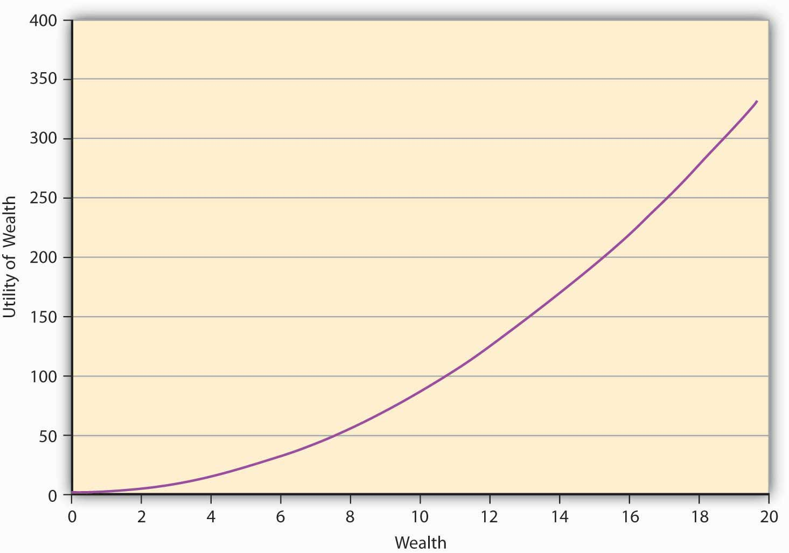
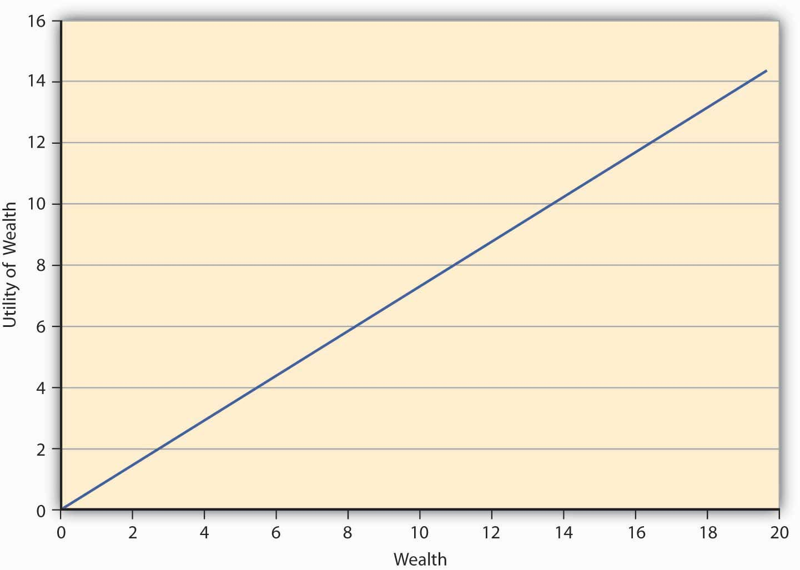

We saw earlier that in a certain world, people like to maximize utility. In a world of uncertainty, it seems intuitive that individuals would maximize expected utilityA construct to explain the level of satisfaction a person gets when faced with uncertain choices.. This refers to a construct used to explain the level of satisfaction a person gets when faced with uncertain choices. The intuition is straightforward, proving it axiomatically was a very challenging task. John von Neumann and Oskar Morgenstern (1944) advocated an approach that leads us to a formal mathematical representation of maximization of expected utility.
We have also seen that a utility function representation exists if the four assumptions discussed above hold. Messrs. von Neumann and Morgenstern added two more assumptions and came up with an expected utility function that exists if these axioms hold. While the discussions about these assumptionsThese are called the continuity and independence assumptions. is beyond the scope of the text, it suffices to say that the expected utility function has the form
where u is a function that attaches numbers measuring the level of satisfaction ui associated with each outcome i. u is called the Bernoulli function while E(U) is the von Neumann-Morgenstern expected utility function.
Again, note that expected utility function is not unique, but several functions can model the preferences of the same individual over a given set of uncertain choices or games. What matters is that such a function (which reflects an individual’s preferences over uncertain games) exists. The expected utility theory then says if the axioms provided by von Neumann-Morgenstern are satisfied, then the individuals behave as if they were trying to maximize the expected utility.
The most important insight of the theory is that the expected value of the dollar outcomes may provide a ranking of choices different from those given by expected utility. The expected utility theoryTheory that says persons will choose an option that maximizes their expected utility rather than their expected wealth. then says persons shall choose an option (a game of chance or lottery) that maximizes their expected utility rather than the expected wealth. That expected utility ranking differs from expected wealth ranking is best explained using the example below.
Let us think about an individual whose utility function is given by and has an initial endowment of $10. This person faces the following three lotteries, based on a coin toss:
Table 3.1 Utility Function with Initial Endowment of $10
| Outcome (Probability) | Payoff Lottery 1 | Payoff Lottery 2 | Payoff Lottery 3 |
|---|---|---|---|
| H (0.5) | 10 | 20 | 30 |
| T (0.5) | −2 | −5 | −10 |
| E(G) | 4 | 7.5 | 10 |
We can calculate the expected payoff of each lottery by taking the product of probability and the payoff associated with each outcome and summing this product over all outcomes. The ranking of the lotteries based on expected dollar winnings is lottery 3, 2, and 1—in that order. But let us consider the ranking of the same lotteries by this person who ranks them in order based on expected utility.
We compute expected utility by taking the product of probability and the associated utility corresponding to each outcome for all lotteries. When the payoff is $10, the final wealth equals initial endowment ($10) plus winnings = ($20). The utility of this final wealth is given by The completed utility table is shown below.
Table 3.2 Lottery Rankings by Expected Utility
| Outcome (Probability) | Utility Lottery 1 | Utility Lottery 2 | Utility Lottery 3 |
|---|---|---|---|
| H (0.5) | 4.472 | 5.477 | 6.324 |
| T (0.5) | 2.828 | 2.236 | 0 |
| E(U) = | 3.650 | 3.856 | 3.162 |
The expected utility ranks the lotteries in the order 2–1–3. So the expected utility maximization principle leads to choices that differ from the expected wealth choices.
The example shows that the ranking of games of chance differs when one utilizes the expected utility (E[U]) theory than when the expected gain E(G) principle applies This leads us to the insight that if two lotteries provide the same E(G), the expected gain principle will rank both lotteries equally, while the E(U) theory may lead to unique rankings of the two lotteries. What happens when the E(U) theory leads to a same ranking? The theory says the person is indifferent between the two lotteries.
What characteristic of the games of chance can lead to same E(G) but different E(U)? The characteristic is the “risk” associated with each game.At this juncture, we only care about that notion of risk, which captures the inherent variability in the outcomes (uncertainty) associated with each lottery. Then the E(U) theory predicts that the individuals’ risk “attitude” for each lottery may lead to different rankings between lotteries. Moreover, the theory is “robust” in the sense that it also allows for attitudes toward risk to vary from one individual to the next. As we shall now see, the E(U) theory does enable us to capture different risk attitudes of individuals. Technically, the difference in risk attitudes across individuals is called “heterogeneity of risk preferences” among economic agents.
From the E(U) theory perspective, we can categorize all economic agents into one of the three categories as noted in Chapter 1 "The Nature of Risk: Losses and Opportunities":
We will explore how E(U) captures these attitudes and the meaning of each risk attitude next.
Consider the E(U) function given by Let the preferences be such that the addition to utility one gets out of an additional dollar at lower levels of wealth is always greater than the additional utility of an extra dollar at higher levels of wealth. So, let us say that when a person has zero wealth (no money), then the person has zero utility. Now if the person receives a dollar, his utility jumps to 1 util. If this person is now given an additional dollar, then as per the monotonicity (more-is-better) assumption, his utility will go up. Let us say that it goes up to 1.414 utils so that the increase in utility is only 0.414 utils, while earlier it was a whole unit (1 util). At 2 dollars of wealth, if the individual receives another dollar, then again his families’ utility rises to a new level, but only to 1.732 utils, an increase of 0.318 units (1.732 − 1.414). This is increasing utility at a decreasing rate for each additional unit of wealth. Figure 3.2 "A Utility Function for a Risk-Averse Individual" shows a graph of the utility.
Figure 3.2 A Utility Function for a Risk-Averse Individual
The first thing we notice from Figure 3.2 "A Utility Function for a Risk-Averse Individual" is its concavityProperty of a curve in which a chord connecting any two points on the curve will lie strictly below the curve., which means if one draws a chord connecting any two points on the curve, the chord will lie strictly below the curve. Moreover, the utility is always increasing although at a decreasing rate. This feature of this particular utility function is called diminishing marginal utilityFeature of a utility function in which utility is always increasing although at a decreasing rate.. Marginal utility at any given wealth level is nothing but the slope of the utility function at that wealth level.Mathematically, the property that the utility is increasing at a decreasing rate can be written as a combination of restrictions on the first and second derivatives (rate of change of slope) of the utility function, Some functions that satisfy this property are The functional form depicted in Figure 3.2 "A Utility Function for a Risk-Averse Individual" is LN(W).
The question we ask ourselves now is whether such an individual, whose utility function has the shape in Figure 3.2 "A Utility Function for a Risk-Averse Individual", will be willing to pay the actuarially fair price (AFP)The expected loss in wealth to the individual., which equals expected winnings, to play a game of chance? Let the game that offers him payoffs be offered to him. In Game 1, tables have playoff games by Game 1 in Table 3.1 "Utility Function with Initial Endowment of $10" based on the toss of a coin. The AFP for the game is $4. Suppose that a person named Terry bears this cost upfront and wins; then his final wealth is $10 − $4 + $10 = $16 (original wealth minus the cost of the game, plus the winning of $10), or else it equals $10 − $4 − $2 = $4 (original wealth minus the cost of the game, minus the loss of $2) in case he loses. Let the utility function of this individual be given by Then expected utility when the game costs AFP equals utils. On the other hand, suppose Terry doesn’t play the game; his utility remains at Since the utility is higher when Terry doesn’t play the game, we conclude that any individual whose preferences are depicted by Figure 3.2 "A Utility Function for a Risk-Averse Individual" will forgo a game of chance if its cost equals AFP. This is an important result for a concave utility function as shown in Figure 3.2 "A Utility Function for a Risk-Averse Individual".
Such a person will need incentives to be willing to play the game. It could come as a price reduction for playing the lottery, or as a premium that compensates the individual for risk. If Terry already faces a risk, he will pay an amount greater than the actuarially fair value to reduce or eliminate the risk. Thus, it works both ways—consumers demand a premium above AFP to take on risk. Just so, insurance companies charge individuals premiums for risk transfer via insurances.
An individual—let’s name him Johann—has preferences that are characterized by those shown in Figure 3.2 "A Utility Function for a Risk-Averse Individual" (i.e., by a concave or diminishing marginal utility function). Johann is a risk-averse person. We have seen that a risk-averse person refuses to play an actuarially fair game. Such risk aversions also provide a natural incentive for Johann to demand (or, equivalently, pay) a risk premium above AFP to take on (or, equivalently, get rid of) risk. Perhaps you will recall from Chapter 1 "The Nature of Risk: Losses and Opportunities" that introduced a more mathematical measure to the description of risk aversion. In an experimental study, Holt and Laury (2002) find that a majority of their subjects under study made “safe choices,” that is, displayed risk aversion. Since real-life situations can be riskier than laboratory settings, we can safely assume that a majority of people are risk averse most of the time. What about the remainder of the population?
We know that most of us do not behave as risk-averse people all the time. In the later 1990s, the stock market was considered to be a “bubble,” and many people invested in the stock market despite the preferences they exhibited before this time. At the time, Federal Reserve Board Chairman Alan Greenspan introduced the term “irrational exuberance” in a speech given at the American Enterprise Institute. The phrase has become a regular way to describe people’s deviations from normal preferences. Such behavior was also repeated in the early to mid-2000s with a real estate bubble. People without the rational means to buy homes bought them and took “nonconventional risks,” which led to the 2008–2009 financial and credit crisis and major recessions (perhaps even depression) as President Obama took office in January 2009. We can regard external market conditions and the “herd mentality” to be significant contributors to changing rational risk aversion traits.
An individual may go skydiving, hang gliding, and participate in high-risk-taking behavior. Our question is, can the expected utility theory capture that behavior as well? Indeed it can, and that brings us to risk-seeking behavior and its characterization in E(U) theory. Since risk-seeking behavior exhibits preferences that seem to be the opposite of risk aversion, the mathematical functional representation may likewise show opposite behavior. For a risk-loving person, the utility function will show the shape given in Figure 3.3 "A Utility Function for a Risk-Seeking Individual". It shows that the greater the level of wealth of the individual, the higher is the increase in utility when an additional dollar is given to the person. We call this feature of the function, in which utility is always increasing at an increasing rate, increasing marginal utilityFeature of a utility function in which utility is always increasing at an increasing rate.. It turns out that all convex utility functionsUtility function in which the curve lies strictly below the chord joining any two points on the curve. look like Figure 3.3 "A Utility Function for a Risk-Seeking Individual". The curve lies strictly below the chord joining any two points on the curve.The convex curve in Figure 3.2 "A Utility Function for a Risk-Averse Individual" has some examples that include the mathematical function .
Figure 3.3 A Utility Function for a Risk-Seeking Individual
A risk-seeking individual will always choose to play a gamble at its AFP. For example, let us assume that the individual’s preferences are given by As before, the individual owns $10, and has to decide whether or not to play a lottery based on a coin toss. The payoff if a head turns up is $10 and −$2 if it’s a tail. We have seen earlier (in Table 3.1 "Utility Function with Initial Endowment of $10") that the AFP for playing this lottery is $4.
The expected utility calculation is as follows. After bearing the cost of the lottery upfront, the wealth is $6. If heads turns up, the final wealth becomes $16 ($6 + $10). In case tails turns face-up, then the final wealth equals $4 ($6 − $2). People’s expected utility if they play the lottery is utils.
On the other hand, if an individual named Ray decides not to play the lottery, then the Since the E(U) is higher if Ray plays the lottery at its AFP, he will play the lottery. As a matter of fact, this is the mind-set of gamblers. This is why we see so many people at the slot machines in gambling houses.
The contrast between the choices made by risk-averse individuals and risk-seeking individuals is starkly clear in the above example.Mathematically speaking, for a risk-averse person, we have Similarly, for a risk-seeking person we have This result is called Jensen’s inequality. To summarize, a risk-seeking individual always plays the lottery at its AFP, while a risk-averse person always forgoes it. Their concave (Figure 3.1 "Links between the Holistic Risk Picture and Risk Attitudes") versus convex (Figure 3.2 "A Utility Function for a Risk-Averse Individual") utility functions and their implications lie at the heart of their decision making.
Finally, we come to the third risk attitude type wherein an individual is indifferent between playing a lottery and not playing it. Such an individual is called risk neutral. The preferences of such an individual can be captured in E(U) theory by a linear utility function of the form where a is a real number > 0. Such an individual gains a constant marginal utility of wealth, that is, each additional dollar adds the same utility to the person regardless of whether the individual is endowed with $10 or $10,000. The utility function of such an individual is depicted in Figure 3.4 "A Utility Function for a Risk-Neutral Individual".
Figure 3.4 A Utility Function for a Risk-Neutral Individual
